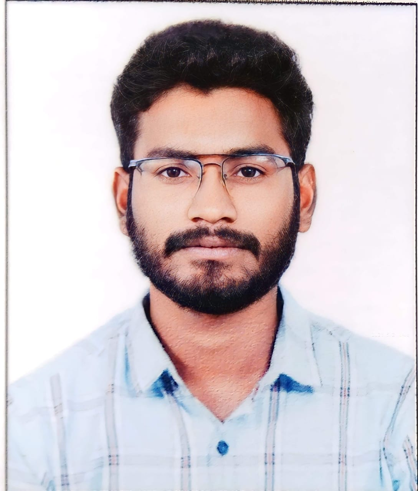

Madagoni Ashok Goud
+91 8466085947 Nalgonda
madagoniashok1@gmail.com https://www.linkedin.com/in/madagoni-ashok-goud-1b0219244
Objectives
To work in an organization which provides me with ample opportunities to enhance my skills and knowledge along with contributing to the growth of the organisation
Education
- BTECh
-
- Bachelor of Technology (ECE) 2020-2024
- Sri indu College of Engineering and Technology
- Hyderabad
- cgpa:8.01
- Intermediate
-
- Gouthami junior college 2018-2020
- Nalgonda
- percentage:97%
- S.S.C
-
- Telangana State Model School 2017
- KOrlapahad
- percentage:87%
Skills
Technical Skils:
- Python
- Html
- css
- javascript
Soft Skills:
-
- Communication
- Team work
Projects
- smart voting using face recognization:
- This venture intends to create elegant voting system based on facial identification technology that allows every voter in INDIA to vote from anywhere in India at the near polling booth in their location.
under ground cable fault detection:
Here we propose an cable fault detection over IOT that detects the exact fault position over iot that makes repairing work very easy.
certificates
- Python,Html,Css - Infosys Springboard
- Python -Wisdom Eye Workshop
- Certicate of Achivement -Govt.Model Degree College
Internships
Python - Certified by Bharat Intern